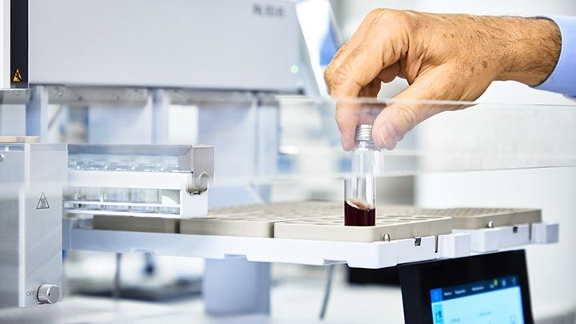

Un sistema di controllo costruito sui tuoi vini
Un bravo winemaker sa che non tutti i numeri sono uguali. Dai parametri di base come titolo alcolometrico, zuccheri ed estratto fino ai residui di fitofarmaci, scegliamo con te che cosa misurare e con quale precisione.
Molti metodi valgono anche per cocktail e bevande aromatizzate a base di vino, a bassa gradazione o senza alcol.
- Analisi di base
- Colore e polifenoli
- Microbiologia
- Metalli
- Allergeni
- Fitofarmaci